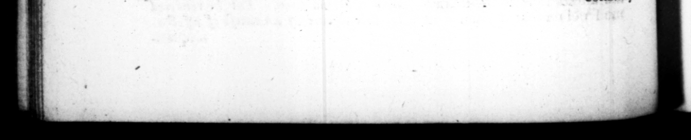

164 aliquanto ex tempore quam 2 cura ſtantior haberetur. Compoluit & carmen lyricum, cujus eſt titulus, Congueſtio de TL. Ceſaris morte. fecit & Grmeca poemata, imitatus Euhorionem, & Rhianum, & arthenium : quibus etis admodnm aeledtarus, — eorum & imagines, publicis bibliothecis inter veteres & — auctores dedicavit: & ob hoe plerique eruditorum certatim ad eum multa de his ediderunt. Maxime tamen curavit notitiam hiſtoriæ fabularis, uſque ad ineptias atque deriſum, Nam & Grammarticos, quod genus hominum ræcipue ut diximus, appetebar ejuſinodi fere quæſtionihus exveriebatur : Que mater Hecube? Quod Achill; nomen inter virgines fulſſet? Quid Sirenes cantare ſint ſolitæ? Et quo primum die, poſt excelfam Auguſti, curiam intravit, quaſi pierati ſimul ac religioili ſatisfacturus, Minvis ex:mplo, thure quidem ac vino, verum ſine tihicine, ſupplicavic : ut ille olim in morte filii. 71. Sermone Græco, quamquam alias promptus & facilis, non tamen uſequaque ufus elt. Abſtinuitque maxime in ſe. natu : adeo quidem ut Mons. polium nominaturus, prius veniam poſtularir, quod ſibi verbo peregrino utendum eſſer : atque etiam in quodam decreto patrum, cum πάf recitaretur, commutandam cenſuerit vocem, & pro peregrina noſtratem requirendam : aut ſi non reperiretur, vel pluribus, & per amhitum verborum rem entinttandam. Militem quoque Græce teſtimonium interrogatum, niſi Latine reſpondere vetuit. 72. Bis omnino toto ſeceſſus tempore, Romam redire C.SUET..TRANQ tion and niceneſs, that he was to talk better extempore, than upon pre. metlitation. He compoſed too a L ode unter the title W denen upon the death of L. Cefar, a 40% Some greek poems in imitation of Eu. rion, Rianus and Parthenius, with which poets he was wonderfully taken, and ſet up their works and ſtatues in the publick libraries among the conſederable authors of annqai*y « for which reaſon moſt of the learn'd men _ time vied with one —_— in pub. iſhing ſeveral things upon them, which 7 292 to "4 at be chi minded was the knowledge of the fabulous hiftory, wherein he was really ſil an ridiculous, For be uſed to t 11 ram marians, which ſurt of peop be chiefly affected, as I have ſaid, tith ſuch kind of queſtions as theſe, who was kiecuba's mother ? what had been Achilles name amongſt the virgins ? what ſong were the Sirens nſed ro ſing ? And the firft day he entered the ſenate-· houſe after the death of Auguſtus, as if he intended at 'once to pay a reſpect to the memory * 2 ther and the Gods, be did, like as M nos had done formerly upon the death of hu ſon, perform Ins devoirs with an of fering of frankincenſe and wine, but without muſe;k, E's 71, Tho' be was ready and quick at the greek tongue, yet he did not uſe it every where, but chiefly farbore it in the ſenate-houſe, *#mſomuch that hang 7.775 zo? the ray ee bl e firſt begg ed pardon my to raus Hof e with.a fereigu word, And when in a decree of the ſenate, the word emblema was reed, he adviſed to have it altered, and on of our own ſourht for in its ſtead; if no proper one could be found, to expreſs the thing by ſeveral words, & 4 periphraſss. tHe would not ſuffer à fel. dier too that as examined as 4 tt neſs upon a tryal in greek, to male any aaſwer but in latin. 72. He but twice, during the time of his reteſs at Capreæ, attempted to return conats,
